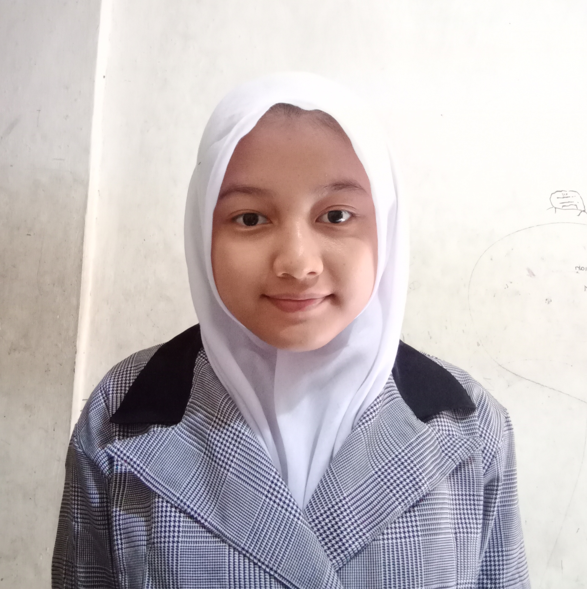

Wulandari
Front End Development
HALO!
Nama saya Wulandari. Saat ini saya merupakan siswa kelas 10 program keahlian Pengembangan Perangkat Lunak dan Gim (PPLG) SMK Wikrama Bogor. Saya sedang mengembangkan diri dalam bidang Front End Development. Ingin berkenalan? Hubungi saya melalui Instagram atau email.
Contact
Wulandari
Bogor, 02 Mei 2006
Instagram:wulaaaannzz
Email:wulandari@smkwikrama.sch.id
PENDIDIKAN
| Sekolah |
Tahun |
| SMK Wikrama Bogor |
2021 - Sekarang |
| SMP Mts Miftahul Huda |
2018 - 2021 |
| SD Negeri Cibogo |
2012 - 2018 |
SKILL PASSPORT
Menginstalasi tools yang diperlukan untuk membuat website statis.
- Menyusun kerangka website statis menggunakan HTML.
- Menggunakan CSS eksternal untuk mengatur tampilan website statis.
- Membuat tampilan website statis menjadi responsive.
- Meluncurkan dan memelihara website statis.